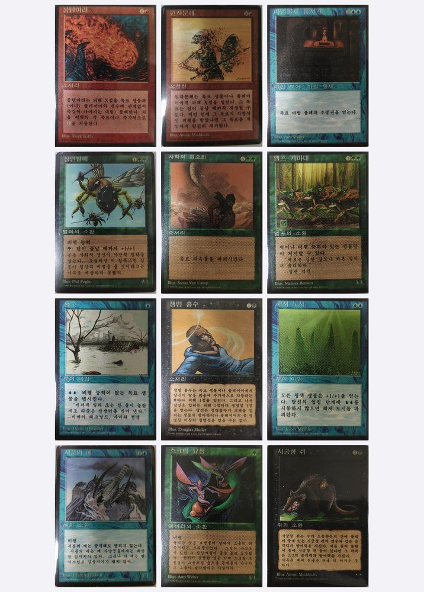
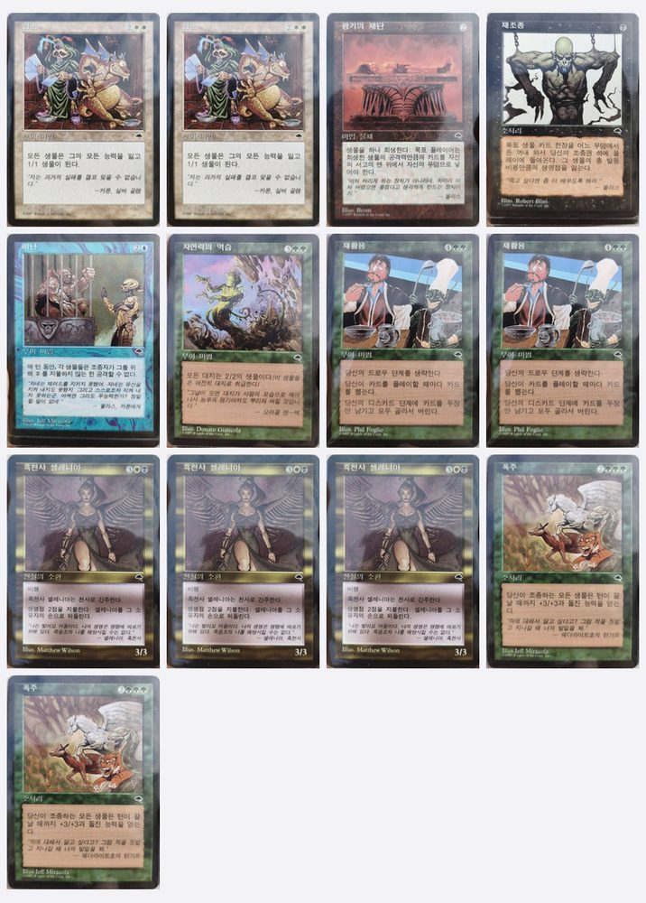
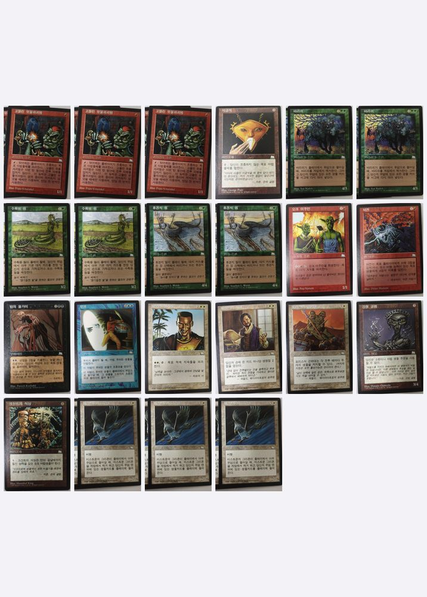

Korean-Language Magic: The Gathering Cards (1995–1998): A Collector's Guide
If you collect foreign black border (FBB) or old-border Magic, you have probably noticed that Korean cards almost never show up. Dealers rarely stock them, price guides don't track them, and even Scryfall doesn't carry the Korean printed names for these sets. This page collects what I know about the first era of Korean-language Magic, from someone who bought these cards new in Korea as a student in the late 1990s and still has most of them.

1. Which sets were printed in Korean?
Korean was one of the languages Wizards of the Coast added in the mid-1990s expansion into Asia, alongside Japanese and Chinese. It did not last long. Korean printings exist for exactly eight sets, then stop for thirteen years.
| Set | Year | Border | Korean cards | Notes |
|---|---|---|---|---|
| Fourth Edition | 1995 | Black | 369 | Listed by Scryfall under "Fourth Edition Foreign Black Border" (4BB) |
| Visions | 1997 | Black | 167 | |
| Weatherlight | 1997 | Black | 167 | |
| Fifth Edition | 1997 | White | 448 | Only white-bordered Korean set of the era |
| Tempest | 1997 | Black | 350 | Largest Korean print run of the period |
| Stronghold | 1998 | Black | 143 | |
| Exodus | 1998 | Black | 143 | |
| Urza's Saga | 1998 | Black | 350 | Last Korean set of the first era |
Nothing was printed in Korean for Urza's Legacy, Urza's Destiny, Classic Sixth Edition or anything after, until the language returned with Magic 2012 in 2011. Mirage, Alliances, Ice Age, Chronicles, Portal and Homelands have no Korean printings on record either. (Counts are Scryfall's card totals per set as of October 2026.)
2. Why Korean Fourth Edition is black-bordered
Through the 1990s Wizards followed a simple convention: the first printing of a card in a given language got a black border, and reprints got a white one, exactly as Alpha/Beta/Unlimited/Revised worked in English. Fourth Edition was the first core set printed in Korean, so every card in it was a first printing in that language and was given the black border. This is the same rule that produced the German, French and Italian Revised "FBB" sets, and it is why Korean Fourth Edition is grouped with them under the 4BB code.
By the time Fifth Edition came around in 1997, those cards had already appeared in Korean once, so Korean Fifth Edition is white-bordered like every other language's Fifth. Expansion sets (Visions through Urza's Saga) were always black-bordered everywhere.
3. How to identify a Korean printing
- Script. Korean uses Hangul: blocky syllables built from circles, vertical and horizontal strokes (시궁창 쥐). It looks nothing like Japanese kana/kanji or Chinese characters, and there are no Chinese characters on Korean Magic cards at all.
- Artist credit and copyright are in English. "Illus. Anson Maddocks" and "© 1995 (or 1996) Wizards of the Coast, Inc." appear in English at the bottom, same as other foreign printings of the era.
- Set symbol. Fourth Edition has no expansion symbol. Tempest, Stronghold, Exodus and the others carry the same symbols as the English sets.
- Collector numbers. Fourth Edition and Fifth Edition have none; Tempest onward have them in the bottom-left area, matching the English numbering.
- Border. Black on everything except Fifth Edition. A white-bordered "Korean Fourth Edition" does not exist — if you see one, it is Fifth.

A few Korean card names
Because Scryfall and most marketplaces do not index the Korean printed names of these sets, searching by Korean name mostly returns nothing. Here are some you will actually see on cards from the collection:
| English | Korean name | Set |
|---|---|---|
| Plague Rats | 시궁창 쥐 | 4th Edition |
| Fireball | 불덩어리 | 4th Edition |
| Disintegrate | 원자분해 | 4th Edition |
| Killer Bees | 살인벌떼 | 4th Edition |
| Drain Life | 생명 흡수 | 4th Edition |
| Earthcraft | 대지조작술 | Tempest |
| Null Rod | 무효의 막대 | Weatherlight |
| Meltdown | 용융 | Urza's Saga |
| Culling the Weak | 약자의 도태 | Exodus |
4. Why they are hard to find
Three things combine here.
The Korean market was tiny. Magic was sold in Korea for only about three years in the 1990s, through a handful of hobby shops, mostly to students. Print runs were sized accordingly and the product was never distributed outside Korea.
Almost everything was played, not collected. Nobody in a Busan game shop in 1997 was sleeving cards for investment. The surviving cards are mostly lightly to moderately played. Near-mint Korean Fourth Edition is very hard to find.
They are invisible to search. With no Korean names in the databases, listings end up titled just "Korean" or get misfiled as Japanese. That is partly why price guides have no separate line for Korean printings, and why the few that reach eBay tend to be found by people who already know what they are looking for.
In my own tracking of eBay sold listings for Korean cards (2024–2026), Korean printings consistently closed above the equivalent English printing, with the largest premium on black-bordered Fourth Edition and on Reserved List cards. I would not call it an established market yet — the sample is small and the spread is wide — but the direction is clear.

5. The collection, and what I'm selling
I bought these cards new in Korea between 1995 and 1998 and kept them since. I am now selling the Korean-language part of the collection — Korean Fourth Edition black border, Visions, Weatherlight, Tempest, Stronghold, Exodus and Urza's Saga — as singles and small lots, with my own photograph of every card rather than stock images.
Highlights at the time of writing include four Korean Earthcraft, two Korean Humility, Korean Squandered Resources, Altar of Dementia and Reanimate, and a run of Korean Fourth Edition black-border rares and uncommons (Fellwar Stone, Manabarbs, Leviathan, Control Magic, Verduran Enchantress). Prices are listed in Korean won with a US-dollar conversion next to each one.
Browse the collection with photos and prices →Buying from outside Korea: I ship worldwide by Korea Post registered airmail with tracking (sleeve, toploader, bubble mailer; combined shipping on multiple cards). Payment is by PayPal invoice, Goods & Services only. Ask for close-ups of any card before paying — I would rather send ten photos than have a disappointed buyer.
Questions I get asked
Are Korean cards tournament legal?
Yes. A Korean Tempest Earthcraft is the same card as an English one for every sanctioned format; language has never affected legality.
Is Korean Fourth Edition "real" FBB?
Yes, in the same sense as German or Italian Revised FBB: a black-bordered first printing of a core set in a new language. Scryfall and most collector communities group it under the 4BB / Foreign Black Border label along with the European languages.
How do I check the Korean name of a card?
For these eight sets, the practical answer is a photo. Send me the English name and I can give you the Korean name and a scan from the collection.
Series: Magic in Korea, 1995–1998
This guide is the reference page. The stories — what a Busan game shop looked like in 1997, how the cards got here, what we played — are going into a series of shorter articles. See the series index →